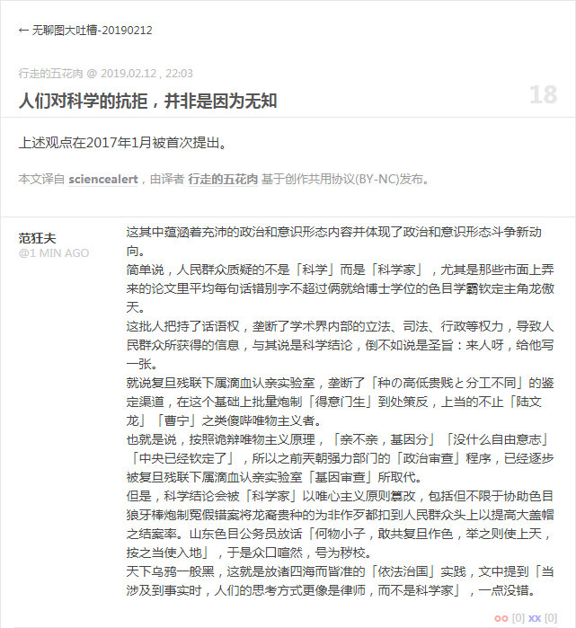
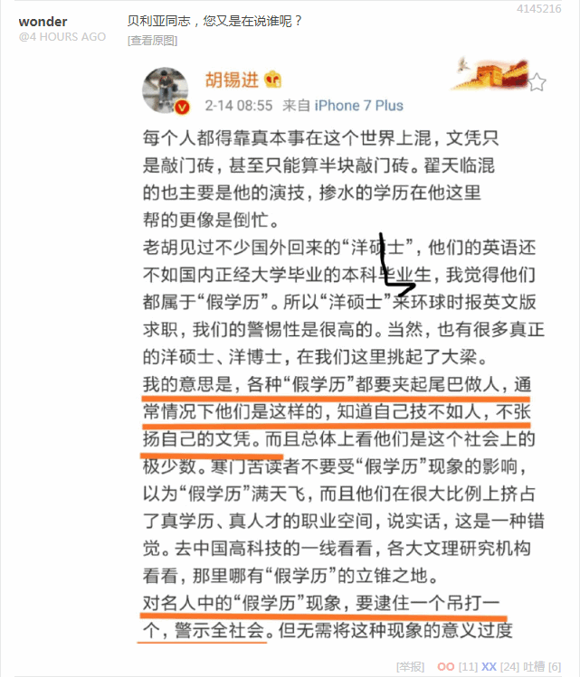
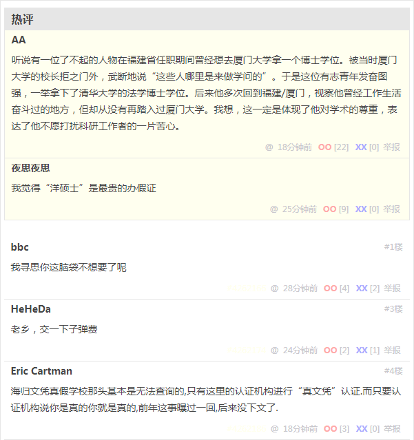

页面链接：
人们对科学的抗拒，并非是因为无知

人们对科学的抗拒，并非是因为无知
这其中蕴涵着充沛的政治和意识形态内容并体现了政治和意识形态斗争新动向。
简单说，人民群众质疑的不是「科学」而是「科学家」，尤其是那些市面上弄来的论文里平均每句话错别字不超过俩就给博士学位的色目学霸钦定主角龙傲天。
这批人把持了话语权，垄断了学术界内部的立法、司法、行政等权力，导致人民群众所获得的信息，与其说是科学结论，倒不如说是圣旨：来人呀，给他写一张。
就说复旦残联下属滴血认亲实验室，垄断了「种の高低贵贱と分工不同」的鉴定渠道，在这个基础上批量炮制「得意门生」到处策反，上当的不止「陆文龙」「曹宁」之类傻哔唯物主义者。
也就是说，按照诡辩唯物主义原理，「亲不亲，基因分」「没什么自由意志」「中央已经钦定了」，所以之前兲朝强力部门的「政治审查」程序，已经逐步被复旦残联下属滴血认亲实验室「基因审查」所取代。
但是，科学结论会被「科学家」以唯心主义原则篡改，包括但不限于协助色目狼牙棒炮制冤假错案将龙裔贵种的为非作歹都扣到人民群众头上以提高大盖帽之结案率。山东色目公务员放话「何物小子，敢共复旦作色，举之则使上天，按之当使入地」，于是众口喧然，号为秽校。
天下乌鸦一般黑，这就是放诸四海而皆准的「依法治国」实践，文中提到「当涉及到事实时，人们的思考方式更像是律师，而不是科学家」，一点没错。
补充
关于「基因审查」多说几句，也是往事。当年西安反日游行的时候，有一位革命小将讲一口流利汉语化作汉人模样混进汉人堆里，抽冷子抡起U型锁砸穿群众脑壳。
那时候我正在之江临安「原创文学论坛」与言必称诡辩唯物主义的色目宣传工作者抬杠，说既然「亲不亲，基因分」，那么看这位抗日逗士的表现，疑似「C3
通古斯太君」忽然血脉觉醒，领悟了抡狼牙棒敲天灵盖的道理，建议去复旦残联下属滴血认亲实验室做个鉴定。
若是果然如此，当然「外交无小事」，蒙古国驻华大使发个微博，兲朝大盖帽就能把人放出来还得赔礼道歉。后来一直没消息，不知道是复旦残联下属滴血认亲实验室不给鉴定呢，还是鉴定结果不符合下半身英特耐雄耐尔主义。
然后就是砥砺奋进六年来，眼瞅着「基因审查」的重要性越来越高，已经超过「政治审查」了也。只需要一纸色目公文即可定性「反汉贱种中国通」然后通过外交渠道撵去友邦从事「反共反攻」工作，或者继续呆在境内负责「路径依赖」事宜。
不惮以最大的恶意揣测，接下来兲朝特色依法治国可能是这样的：
刑事犯罪嫌疑犯若由复旦残联下属滴血认亲实验室鉴定为「C3
通古斯太君」，哪怕身份证户口本上写着「汉族」，也得按照「两少一宽」待遇处理，要尊重一小撮同胞的传统风俗习惯避免友邦人士莫名惊诧。
或问了，若是鉴定出「O1
良渚遗民」咋办呢？更简单，违背了唯物主义本能去模仿异族，一定是之江临安赵家人派来的间谍特务卧底准备找「王佐」接头以策反「陆文龙」「曹宁」呢，公检法权限不够，建议移交「中统」「军统」处理。
顺便，「O1
良渚遗民」的传统风俗习惯也有，按照色目宣传工作者提供的内部情报，之江绍兴钦定主角龙傲天「勾践」，擅长制假售假并翻脸赖账趁债主病要债主命，随身携带「意大利炮」，碰上「穴兄弟」就「杀妻证道」还惦记着「分一杯羹」，叼着牙签打着饱嗝建议饿殍「何不食肉糜」，口头禅「吔屎啦你」。
那么，碰上经济纠纷，或者哪怕平时的商业来往，既然「良渚老赖」信用记录如此，还敢贷款的金融机构，利率也应该从正无穷开始计算。
最后，我等「积极主观唯心主义者」，不承认包括但不限于复旦残联下属滴血认亲实验室的一票科技机构提供的唯物主义伪证，既不会被鉴定报告策反而南下也不会被色目公文排挤而北上。
在这「兲朝经济稳中向好，国际局势和平得一哔」大背景之下，作为「地球人」，就应该打酱油做俯卧撑看热闹不嫌事大，咱「言必信行必果硁硁然」的「小人」可不会观棋不语，还得到处支招让它们丫打得更精彩，顺便收集素材，实践「激化矛盾制造冲突增加剧情跌宕起伏程度」的文艺理论。
补充素材：


煎蛋无聊图 4145216